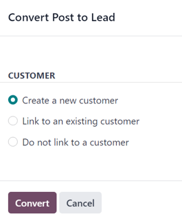
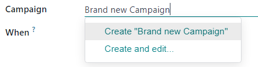

Flujos de redes sociales¶
Para agregar una cuenta empresarial de redes sociales como flujo, vaya a la y seleccione el botón Agregar un flujo que está ubicado en la esquina superior izquierda. Al hacerlo, se abrirá la ventana emergente Agregar un flujo.

Una vez que se encuentre en la ventana emergente Agregar un flujo, seleccione Vincular una nueva cuenta para un negocio desde cualquiera de las siguientes plataformas populares de redes sociales: Facebook, Instagram, LinkedIn, X o Twitter y YouTube.
Después de hacer clic en una de las redes sociales desde la ventana emergente Agregar un flujo, Odoo le redirigirá a la página de autorización de esa red social en específico, allí debe otorgar permiso para que Odoo agregue esa cuenta como un flujo en la aplicación Marketing social.

Una vez que proporcionó la autorización necesaria, Odoo regresa al Feed en el tablero principal de Marketing social. Allí aparece una nueva columna con las publicaciones de esa cuenta. Puede agregar cuentas o flujos en cualquier momento.
Importante
Puede agregar una página de Facebook siempre y cuando la cuenta que realiza esta acción tenga permisos de administrador de la página. Además, puede agregar diferentes páginas para distintos flujos.
Nota
Las cuentas de Instagram se agregan a través de un inicio de sesión de Facebook, pues utilizan la misma API. Esto quiere decir que una cuenta de Instagram debe estar vinculada a una cuenta de Facebook para que aparezca como un flujo en Odoo.
Posts¶
Si hace clic en una publicación de un flujo de redes sociales abrirá una ventana emergente que muestra el contenido de esa publicación en específico, junto con todos los datos relacionados a las interacciones, por ejemplo, me gusta, comentarios y otros.

Si lo desea, el usuario puede dejar un nuevo comentario en la publicación desde la ventana emergente de la publicación. Solo debe escribir su comentario en el campo Escriba un comentario… y luego presionar la tecla Enter (o Entrar) para publicarlo.
Crear leads a partir de comentarios¶
La aplicación Marketing social de Odoo también le permite crear leads a partir de los comentarios en sus redes sociales.
Para crear un lead desde alguno de los comentarios en una publicación de redes sociales, haga clic en la publicación correspondiente en el tablero para abrir la ventana emergente específica de esa publicación. Luego, vaya hasta el comentario indicado y haga clic en el icono de tres puntos verticales que se encuentra a la derecha de ese comentario.
Al hacerlo, abre un menú desplegable con la opción Crear lead.

Una vez que hace clic en Crear lead desde el menú desplegable del comentario, aparece la ventana emergente de Convertir publicación a lead.
En esta ventana emergente puede seleccionar si Crear un nuevo cliente, Vincular a un cliente existente o No vincular a un cliente.
Nota
Si selecciona Vincular a un cliente existente, aparece un nuevo campo de Cliente debajo de esas opciones, allí puede elegir un cliente para vincularlo a este lead.
Una vez que seleccionó una opción, haga clic en el botón Convertir en la parte inferior de la ventana emergente Convertir publicación a lead. Esto abrirá un nuevo formulario de detalle de lead donde puede agregar y procesar la información necesaria.

Estadísticas¶
Cuando agrega un flujo de cuenta de redes sociales al tablero de Marketing social, cada flujo también muestra y vincula los KPI específicos de esa plataforma de redes sociales, en caso de que la plataforma cuente con ellos.
Para consultar las estadísticas y métricas relacionadas con los KPI de cualquier cuenta de redes sociales, haga clic en el enlace Información que se encuentra en la parte superior de cada flujo.
Nota
Si se encuentra en un entorno multiempresa y no selecciona todas las páginas, entonces se le desautenticará.
Por ejemplo, si las empresas tienen 3 páginas de Facebook pero solo le proporciona acceso a 1 y luego intenta proporcionarle acceso a otra después, se le desautenticará y perderá el acceso a la información y las métricas de la página inicial.
Asegúrese de agregar todas las páginas para todas las empresas del entorno multiempresas para evitar que ocurra este error. Si una página se desautentica solo tiene que eliminar el flujo y volverlo a establecer.
Crear y publicar contenido en redes sociales¶
La aplicación Marketing social de Odoo le permite crear y publicar contenido para cuentas de redes sociales desde la aplicación.
Para crear contenido para sus cuentas de redes sociales, vaya a la :menuselection:` aplicación Marketing social` y haga clic en el botón Nueva publicación que está ubicado en la esquina superior derecha del tablero de Marketing social.

O, vaya a y haga clic en Nuevo.

Cualquiera de las rutas anteriores muestra una publicación de red social en blanco que se puede personalizar y configurar de varias maneras diferentes.
Formulario de detalles de la publicación¶
El formulario de detalles de una publicación para redes sociales en la aplicación Marketing social de Odoo tiene muchas opciones configurables disponibles.
Compañía¶
Si está trabajando en un entorno multiempresa, el primer campo en la sección Su publicación del formulario de detalles de la publicación de redes sociales es Empresa. En este campo, seleccione la empresa que debería estar vinculada a esta publicación de redes sociales.
Publicar en¶
Si está trabajando en un entorno de una sola empresa, el primer campo en la sección Su publicación del formulario de detalles de publicación de redes sociales es Publicar en. En este campo debe determina en qué red social se debe realizar esta publicación, o a qué visitantes del sitio web se debería enviar esta publicación mediante notificación emergente; solo tiene que seleccionar la caja a un lado de la o las opciones deseadas.
En esta sección podrá elegir, de manera automática, todas las cuentas de redes sociales disponibles que ha vinculado a su base de datos. Si una cuenta de red sociales no se a agregado a la aplicación Marketing social, entonces no aparecerá como opción para publicar en la plantilla.
Puede seleccionar varios flujos de redes sociales y sitios web en el campo Publicar en. Siempre debe seleccionar al menos una de las opciones en el campo Publicar en.
Importante
Asegúrese de habilitar las notificaciones push del sitio web en la aplicación Sitio web para que la opción Notificaciones push aparezca en el formulario de detalles de la publicación.
Para hacerlo, vaya a y active Habilitar las notificaciones push del sitio wen, llene los campos correspondientes y haga clic en Guardar.
Mensaje¶
Luego está el campo Mensaje. Aquí se crea el contenido principal de la publicación.
En el campo Mensaje escriba el mensaje que quiere enviar en la publicación. Después, haga clic en cualquier lugar fuera del Mensaje para ver ejemplos visuales sobre cómo se verá la publicación en todas las redes sociales seleccionadas (así como en los sitios web como notificaciones push).

Truco
También puede agregar emojis directo al texto en el campo Mensaje, solo haga clic en el icono de 🙂 (cara sonriente) ubicado en la parte derecha de la línea de este campo. Al hacer clic en este icono se muestra un menú desplegable que contiene varios emojis para elegir.
Nota
Si selecciona Twitter en el campo Publicar en, aparecerá un contador de caracteres debajo del campo Mensaje.
Adjuntar imágenes¶
Si se utilizarán imágenes en la publicación, haga clic en Adjuntar imágenes en la parte inferior del campo Mensaje. Al hacer clic, Odoo mostrará una ventana emergente en la que puede seleccionar la imagen que quiere subir desde su disco duro.
Después de subir y adjuntar la imagen deseada, Odoo le mostrará una nueva previsualización de la publicación en la que se incluirá la imagen en el lado derecho del formulario.

Campaña¶
Después, hay un campo Campaña que no es obligatorio, pero le da la opción de adjuntar esta publicación a una campaña de marketing específica.
Para agregar esta publicación a una campaña existente, haga clic en el campo vacío Campaña para mostrar un menú desplegable donde podrá ver todas las campañas existentes en la base de datos. Seleccione la campaña que desea y agréguela.
Para crear una nueva campaña directamente desde el formulario de detalles de la publicación, empiece a escribir el nombre de la nueva campaña en el campo en blanco Campaña y seleccione ya sea Crear o Crear y editar.
Si hace clic en Crear se creará una campaña que puede editar y personalizar después.
Si hace clic en Crear y editar… se creará la campaña y se abrirá un ventana emergente Crear campaña, donde podrá editar los campos Identificador de campañas, Responsable y Etiquetas.

Cuando se realicen todos los ajustes deseados, haga clic en Guardar y cerrar para guardar la campaña y regresar al formulario de detalles de la publicación.
Cuándo¶
En el campo Cuando, elija Enviar ahora o Programar después. Con la primera opción, Odoo enviará la publicación de inmediato; con la segunda, en una fecha y hora posteriores.
Si selecciona Programar después, aparecerá un nuevo campo de Fecha planificada. Si hace clic en el campo vació aparecerá un calendario en el que puede designar una fecha y una hora futuras.

Después de seleccionar una fecha y hora deseadas, haga clic en Aplicar. Después, Odoo realizará la publicación en esa fecha y hora específicas en la o las cuentas de redes sociales predeterminadas.
Nota
Si va a programar una publicación, el botón en la parte superior que antes era Publicar cambiará a Programar. Asegúrese de hacer clic en Programar después de completar el formulario de detalle de la publicación.
Al hacerlo se establecerá la fecha y hora en la que Odoo realizará la publicación y cambia e estado a Programado.
Opciones de notificaciones push¶
Si se elige una (o varias) opciones de [Notificación Push] en el campo Publicar en, aparecerá una sección específica de Opciones de notificación push en la parte inferior del formulario de detalle de la publicación en redes sociales.

Tome en cuenta que ninguno de estos campos son obligatorios.
El primer campo en esta sección es Título de la notificación. En este campo hay una opción para agregar un título personalizado a la notificación push que se enviará.
Para designar una página específica para activar la notificación push en el sitio web ingrese el URL de la página en el campo URL objetivo. Así, una vez que un visitante llegue a esta página, Odoo mostrará la notificación push.
Debajo de ese campo está la opción para agregar una imagen del icono a la notificación push. Este es un icono que aparece a un lado de la notificación push.
Para subir una nueva imagen, haga clic en el cicono ✏️ (lápiz) al pasar el cursor por encima del icono de cámara de Imagen del icono. Hacerlo mostrará una ventana emergente en donde puede subir la imagen de icono que quiera desde su disco duro.
Una vez que lo haya hecho, Odoo actualizará de forma automática la previsualización de cómo el icono aparecerá en la notificación push.
Nota
Si programa la publicación para después, hay una opción para asegurar que la publicación se enviará en la zona horaria del visitante, solo tiene que activar la opción Hora local. Al hacerlo, Odoo tomará en cuenta la ubicación del visitante al enviar la notificación a la hora apropiada.

También está el campo todos los registros, con el cual puede editar un grupo específico de destinatarios en la base de datos, según ciertos criterios, además de que se puede aplicar para todas o algunas de las reglas.
Para utilizar este campo haga clic en el botón + Agregar condición, el cual hará que aparezca campo de regla tipo ecuación.
En este campo tipo ecuación de regla puede especificar la criteria que Odoo tomará en cuanta al enviar esta publicación a una audiencia en especial.

Para agregar una regla adicional, haga clic en el icono ➕ (signo de más) a la derecha de la regla.
Para agregar una rama (una serie de reglas adicionales según la regla previa que especifican más la audiencia objetivo), haga clic en el icono de rama, ubicado a la derecha del icono ➕ (más).
Por último, haga clic en el icono 🗑️ (basura) para borrar cualquier regla.
Los registros debajo de las reglas representan el tamaño de la audiencia específica de destinatarios.
Página de publicaciones¶
Para obtener un resumen completo de las publicaciones, vaya a , aquí tendrá acceso a todas las publicaciones que se han creado y publicado con Odoo.
Hay cuatro opciones de vista diferentes para los datos en la página Publicaciones sociales: kanban, calendario, lista y gráfica dinámica.
Las opciones de vista se encuentran en la esquina superior derecha de la página Publicaciones, abajo de la barra de búsqueda.
Odoo mostrará las publicaciones en la vista de kanban de forma predeterminada. Puede clasificar con mayor detalle la información en esta página con ayuda de la barra lateral, donde puede ver, acceder y analizar todas las redes sociales y las publicaciones conectadas.
En la esquina superior derecha encontrará el icono de barra de gráfica invertida, el cual representa la vista de kanban.

La opción de vista de calendario muestra una representación visual de las publicaciones en un formato de calendario de cuándo se realizaron, o están programadas. Esta opción proporciona una vista general clara de cualquier día, semana o mes planificado. Odoo muestra todas las publicaciones en borradores, programadas y publicadas.
Si hace clic en una fecha se mostrará un formulario de detalles de publicaciones en blanco en el que podrá crear la publicación social y Odoo la publicará en la fecha y hora específicas.
En la esquina superior derecha encontrará el icono de calendario, el cual representa la vista de calendario.

La opción de vista de lista es parecida a la de kanban, pero en lugar de bloques individuales, muestra toda la información de la publicación en un diseño de lista más despejado. Cada línea de la lista muestra las cuentas de redes sociales, el mensaje y el estado de cada publicación.
La barra lateral izquierda organiza todas las publicaciones por Estado y también enlista todas las redes sociales conectadas.
En la esquina superior derecha hay cuatro líneas verticales que representan la vista de lista.

La opción de vista de tabla dinámica proporciona una tabla de cuadrícula personalizable en su totalidad, en ella puede agregar y analizar diferentes medidas de datos.
La opción de vista de tabla dinámica proporciona varias opciones de análisis, brindándole un análisis profundo y detallado de varias publicaciones y métricas.
Haga clic en cualquier ícono ➕ (signo de más) junto a una línea en la tabla dinámica para mostrar más opciones métricas que puede agregar a la cuadrícula.
Mientras está en la vista de tabla dinámica, estará disponible la opción de Insertar en una hoja de cálculo, que se encuentra a la derecha del menú desplegable Medidas, en la esquina superior izquierda de la página Publicaciones sociales.
Junto a la opción Insertar en una hoja de cálculo hay tres opciones específicas de la vista de tabla dinámica.
Las opciones son, de izquierda a derecha:
Voltear eje, voltea los ejes X e Y en la tabla de cuadrícula.
Expandir todo, expande cada línea en la cuadrícula, mostrando más información detallada relacionada.
Descargar, al hacer clic, descarga de manera instantánea la tabla dinámica como una hoja de cálculo.
Visitantes¶
Para ver un resumen completo de todas las personas que han visitado el sitio web conectado a la base de datos, vaya a .

Aquí, Odoo proporciona una página detallada de toda la información pertinente de los visitantes en la vista predefinida Kanban. Si los visitantes ya tienen información de contacto en la base de datos, tendrá disponible la opción para enviarles un correo o SMS.
Los datos de este visitante también se pueden ver en forma de lista o de gráfico. Estas opciones de vista se ubican en la esquina superior derecha de la página Visitantes.
Página de redes sociales¶
Otra forma de vincular redes sociales rápido a la aplicación Marketing social es desde la página Redes sociales. Para ingresar a esta página, vaya a .
En la página Redes sociales tiene una gama de opciones de redes sociales, cada una con un botón para vincular la cuenta: Facebook, Instagram, LinkedIn, Twitter, YouTube, y Notificaciones push.

Página de cuentas de redes sociales¶
Para ver una lista de todas las cuentas de redes sociales y sitios web que están vinculados a una base de datos, vaya a . Estas cuentas de redes sociales muestran el nombre, el Nombre de usuario, la plataforma de redes sociales, quién creó la cuenta y la empresa a la que está asociada.

Para editar/modificar cualquier cuenta de redes sociales en esta página, simplemente seleccione la cuenta deseada en la lista de esta página, y luego haga los ajustes que crea necesarios.
Página de flujos sociales¶
Para ver una página separada con todos los flujos de redes sociales que ha agregado al tablero principal de Marketing social, vaya a .

Aquí, la infromación del flujo social se organiza en una lista con las Redes sociales, el Título del flujo, el Tipo (por ejemplo, Publicaciones, Palabra clave, etc.), quién lo creó y la la empresa a la que está asociada.
Para modificar la información de cualquier flujo, simplemente haga clic en el flujo que desee de la lista y haga los ajustes que crea necesarios.
Ver también
Fundamentos de marketing social¶
La aplicación Marketing social de Odoo ayuda a quienes se encargan del marketing de contenido a crear y programar publicaciones, gestionar varias cuentas de redes sociales, analizar la efectividad del contenido e interactuar directamente con los seguidores de las redes sociales en una ubicación centralizada.